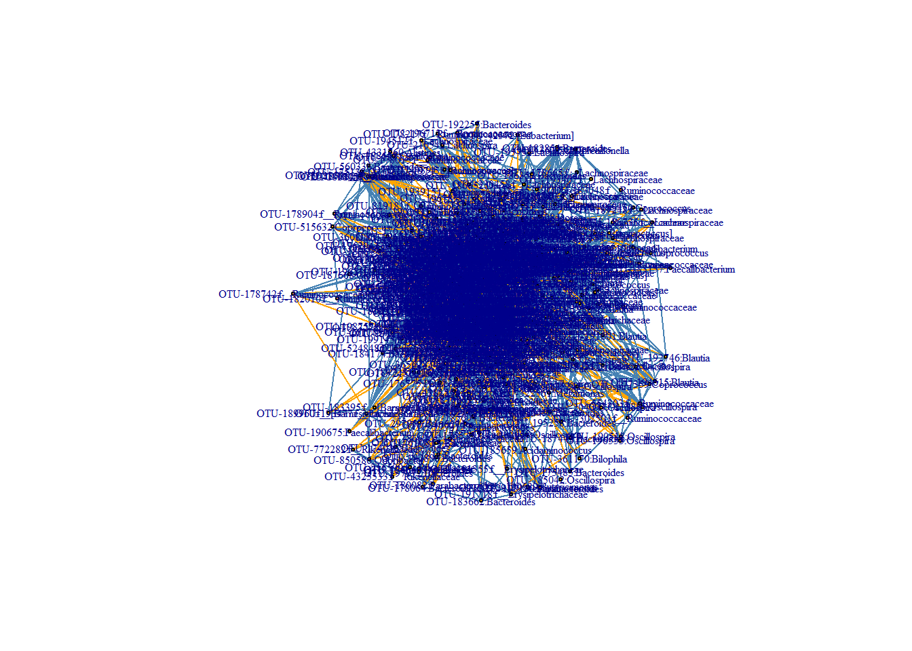
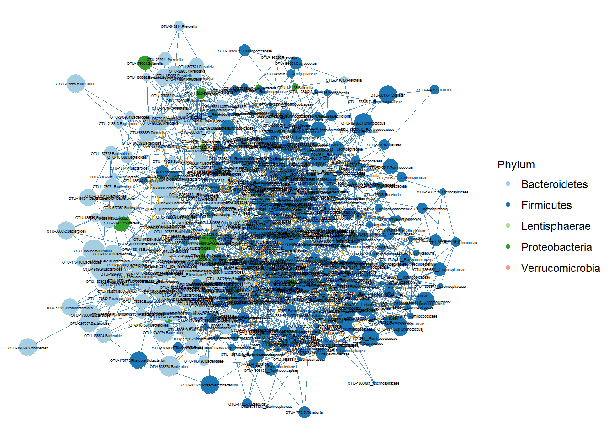
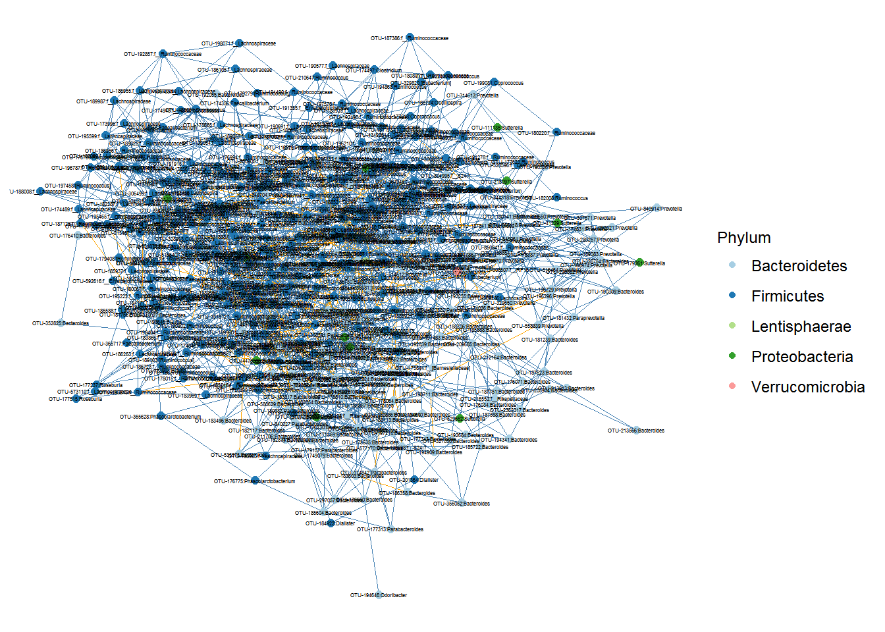
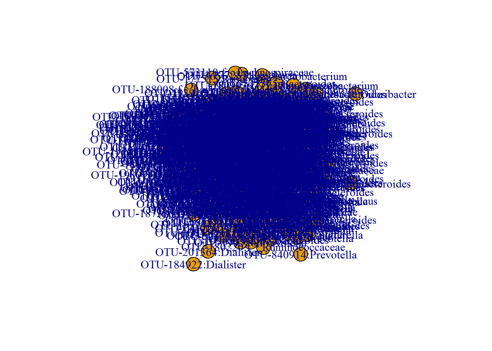
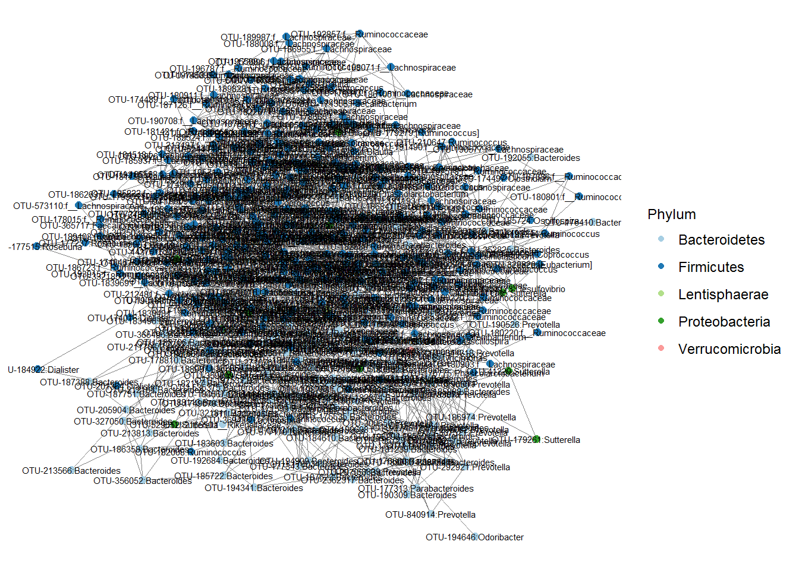
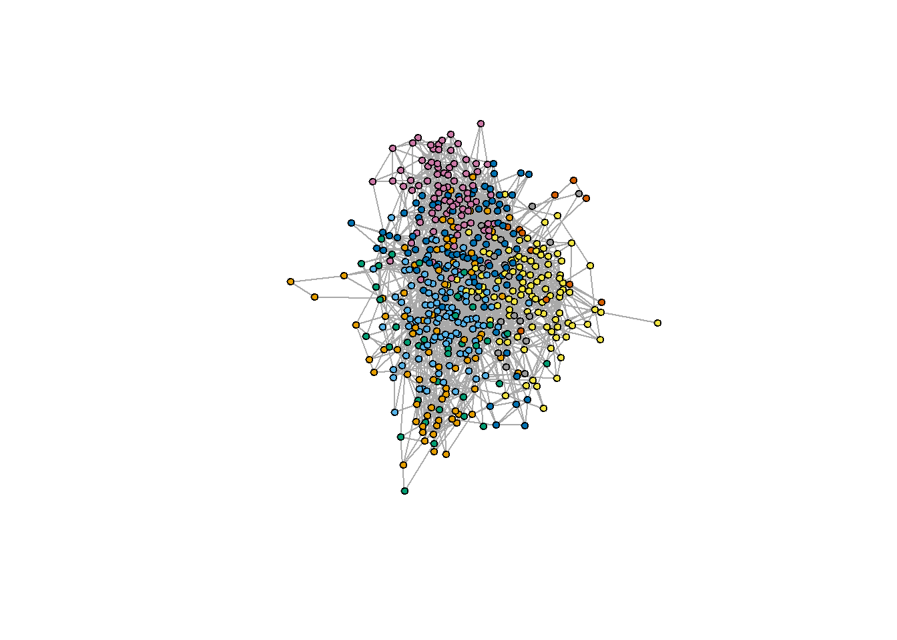
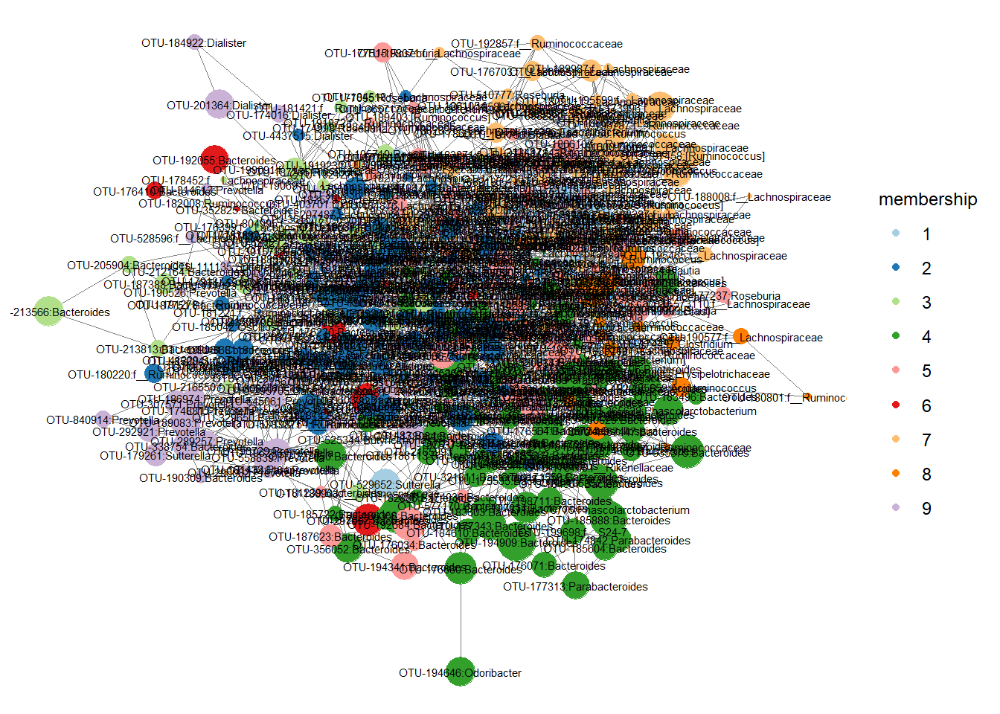

7 Inference of Microbial Ecological Networks
More information on SPIEC-EASI.
The input for SPIEC-EASI is a counts table. The normalization and tranformation is done by the function. This is very handy tool.
This step is heavy on computational memory and slow. Noise filtered OTU-OTU level covariance would be ideal.
Load packages and data
library(devtools)
install_github("zdk123/SpiecEasi")
# Other packages you need to install are
install.packages("igraph")
install.packages("intergraph")
install.packages("GGally")
devtools::install_github("briatte/ggnet")
install.packages("network")
install.packages("ggnetwork")library(microbiome) # data analysis and visualisation
library(phyloseq) # also the basis of data object. Data analysis and visualisation
library(RColorBrewer) # nice color options
library(ggpubr) # publication quality figures, based on ggplot2
library(dplyr) # data handling
library(SpiecEasi) # Network analysis for sparse compositional data
library(network)
library(intergraph)
#devtools::install_github("briatte/ggnet")
library(ggnet)
library(igraph)Read data
ps1 <- readRDS("./phyobjects/ps1.rds")Select only stool samples
We will subset our data to include only stool samples.
ps1.stool <- subset_samples(ps1, bodysite == "Stool")For testing reduce the number of OTUs
ps1.stool.otu <- prune_taxa(taxa_sums(ps1.stool) > 100, ps1.stool)
# Add taxonomic classification to OTU ID
ps1.stool.otu.f <- microbiomeutilities::format_to_besthit(ps1.stool.otu)
head(tax_table(ps1.stool))## Taxonomy Table: [6 taxa by 7 taxonomic ranks]:
## Kingdom Phylum Class
## 4440970 "Bacteria" "TM7" "TM7-3"
## 4299136 "Bacteria" "TM7" "TM7-3"
## 627481 "Bacteria" "TM7" "TM7-3"
## 86812 "Bacteria" "Proteobacteria" "Epsilonproteobacteria"
## 4442127 "Bacteria" "Proteobacteria" "Epsilonproteobacteria"
## 4425150 "Bacteria" "Proteobacteria" "Epsilonproteobacteria"
## Order Family Genus Species
## 4440970 "CW040" "F16" NA NA
## 4299136 "CW040" "F16" NA NA
## 627481 "I025" "Rs-045" NA NA
## 86812 "Campylobacterales" "Campylobacteraceae" "Campylobacter" NA
## 4442127 "Campylobacterales" "Campylobacteraceae" "Campylobacter" NA
## 4425150 "Campylobacterales" "Campylobacteraceae" "Campylobacter" NACheck the difference in two phyloseq objects.
head(tax_table(ps1.stool.otu.f))7.1 Prepare data for SpiecEasi
The calcualtion of SpiecEasi are time consuming. For this tutorial we will have the necessary input files for SpiecEasi.
- OTU table
- Taxonomy table
We save it as .rds object.
otu.c <- t(otu_table(ps1.stool.otu.f)@.Data) #extract the otu table from phyloseq object
tax.c <- as.data.frame(tax_table(ps1.stool.otu.f)@.Data)#extract the taxonomy information
head(tax.c)## Domain Phylum Class
## OTU-359809:Sutterella Bacteria Proteobacteria Betaproteobacteria
## OTU-215097:Sutterella Bacteria Proteobacteria Betaproteobacteria
## OTU-179261:Sutterella Bacteria Proteobacteria Betaproteobacteria
## OTU-41229:Sutterella Bacteria Proteobacteria Betaproteobacteria
## OTU-4371362:Sutterella Bacteria Proteobacteria Betaproteobacteria
## OTU-178885:Sutterella Bacteria Proteobacteria Betaproteobacteria
## Order Family Genus
## OTU-359809:Sutterella Burkholderiales Alcaligenaceae Sutterella
## OTU-215097:Sutterella Burkholderiales Alcaligenaceae Sutterella
## OTU-179261:Sutterella Burkholderiales Alcaligenaceae Sutterella
## OTU-41229:Sutterella Burkholderiales Alcaligenaceae Sutterella
## OTU-4371362:Sutterella Burkholderiales Alcaligenaceae Sutterella
## OTU-178885:Sutterella Burkholderiales Alcaligenaceae Sutterella
## Species best_hit
## OTU-359809:Sutterella g__Sutterella OTU-359809:Sutterella
## OTU-215097:Sutterella g__Sutterella OTU-215097:Sutterella
## OTU-179261:Sutterella g__Sutterella OTU-179261:Sutterella
## OTU-41229:Sutterella g__Sutterella OTU-41229:Sutterella
## OTU-4371362:Sutterella g__Sutterella OTU-4371362:Sutterella
## OTU-178885:Sutterella g__Sutterella OTU-178885:SutterellasaveRDS(otu.c, "input_data/stool.otu.c.rds")
saveRDS(tax.c, "input_data/stool.tax.c.rds")7.2 SPIEC-EASI network reconstruction
More information on SPIEC-EASI.
This input for SPIEC-EASI is a counts table. The normalization and tranformation is done by the function. This is very handy tool.
This step is heavy on computational memory and very slow. For this workshop we have already have the output and will skip this chuck.
# In practice, use more repetitions
set.seed(1244)
net.c <- spiec.easi(otu.c, method='mb', icov.select.params=list(rep.num=50))
# saveRDS(net.c, "input_data/net.c.rds")
#please use more numebr of rep.num (99 or 999) the paraemters
## Create graph object and get edge values We have save the output of net.c to save time
The output of spiec.easi is stored in ./input_data/ as stool.net.c.rds. Read this file in R and follow the steps below.
net.c <- readRDS("input_data/stool.net.c.rds")
n.c <- symBeta(getOptBeta(net.c))Add names to IDs
We also add abundance values to vertex (nodes).
colnames(n.c) <- rownames(n.c) <- colnames(otu.c)
vsize <- log2(apply(otu.c, 2, mean)) # add log abundance as properties of vertex/nodes.7.2.1 Prepare data for plotting
stool.ig <- graph.adjacency(n.c, mode='undirected', add.rownames = TRUE, weighted = TRUE)
stool.ig # we can see all the attributes and weights## IGRAPH eabab7c UNW- 506 1865 --
## + attr: name (v/c), TRUE (v/c), weight (e/n)
## + edges from eabab7c (vertex names):
## [1] OTU-359809:Sutterella--OTU-211706:Bacteroides
## [2] OTU-359809:Sutterella--OTU-198711:Bacteroides
## [3] OTU-359809:Sutterella--OTU-1105984:Bacteroides
## [4] OTU-359809:Sutterella--OTU-193233:Bacteroides
## [5] OTU-359809:Sutterella--OTU-544859:f__Ruminococcaceae
## [6] OTU-359809:Sutterella--OTU-1740499:Phascolarctobacterium
## [7] OTU-215097:Sutterella--OTU-320291:Bacteroides
## [8] OTU-215097:Sutterella--OTU-300650:Prevotella
## + ... omitted several edges#plot(stool.ig)set the layout option
# check what is it?
?layout_with_frcoords.fdr = layout_with_fr(stool.ig)7.2.2 igraph network
E(stool.ig)[weight > 0]$color<-"steelblue" #now color the edges based on their values positive is steelblue
E(stool.ig)[weight < 0]$color<-"orange" #now color the edges based on their values
plot(stool.ig, layout=coords.fdr, vertex.size = 2, vertex.label.cex = 0.5)
The visualisation can be enhanced using ggnet R package.
stool.net <- asNetwork(stool.ig)
network::set.edge.attribute(stool.net, "color", ifelse(stool.net %e% "weight" > 0, "steelblue", "orange"))Start adding taxonomic information.
colnames(tax_table(ps1.stool.otu.f))## [1] "Domain" "Phylum" "Class" "Order" "Family" "Genus"
## [7] "Species" "best_hit"phyla <- map_levels(colnames(otu.c), from = "best_hit", to = "Phylum", tax_table(ps1.stool.otu.f))
stool.net %v% "Phylum" <- phyla
stool.net %v% "nodesize" <- vsize7.2.3 Network plot
mycolors <- scale_color_manual(values = c("#a6cee3", "#1f78b4", "#b2df8a", "#33a02c","#fb9a99","#e31a1c","#fdbf6f","#ff7f00","#cab2d6","#6a3d9a","#ffff99","#b15928"))
p <- ggnet2(stool.net, node.color = "Phylum",
label = TRUE, node.size = "nodesize",
label.size = 1, edge.color = "color") + guides(color=guide_legend(title="Phylum"), size = FALSE) + mycolors
p 
p <- ggnet2(stool.net, node.color = "Phylum",
label = TRUE, node.size = 2,
label.size = 1, edge.color = "color") + guides(color=guide_legend(title="Phylum"), size = FALSE) + mycolors
p 
7.3 Network properties
Check for the number of positive and negative edges.
betaMat=as.matrix(symBeta(getOptBeta(net.c)))
# We divide by two since an edge is represented by two entries in the matrix.
positive=length(betaMat[betaMat>0])/2
negative=length(betaMat[betaMat<0])/2
total=length(betaMat[betaMat!=0])/2 7.3.1 Modularity in networks
net.c## Model: Meinshausen & Buhlmann Graph Estimation (mb)
## selection criterion: stars
## Graph dimension: 506
## sparsity level 0.01459711mod.net <- net.c$refit
colnames(mod.net) <- rownames(mod.net) <- colnames(otu.c)#you can remove this
vsize <- log2(apply(otu.c, 2, mean))# value we may or may not use as vertex.attribute
stool.ig.mod <- graph.adjacency(mod.net, mode='undirected', add.rownames = TRUE)
plot(stool.ig.mod) # we can see all the attributes and weights
stool.net.mod <- asNetwork(stool.ig.mod)phyla <- map_levels(colnames(otu.c), from = "best_hit", to = "Phylum", tax_table(ps1.stool.otu.f))
stool.net.mod %v% "Phylum" <- phyla
stool.net.mod %v% "nodesize" <- vsize7.3.2 Network plot
mycolors <- scale_color_manual(values = c("#a6cee3", "#1f78b4", "#b2df8a", "#33a02c","#fb9a99","#e31a1c","#fdbf6f","#ff7f00","#cab2d6","#6a3d9a","#ffff99","#b15928"))
p <- ggnet2(stool.net.mod, node.color = "Phylum",
label = TRUE, node.size = 2,
label.size = 2) + guides(color=guide_legend(title="Phylum"), size = FALSE) + mycolors
p 
Identify modularity in networks.
modules =cluster_fast_greedy(stool.ig.mod)
print(modules)## IGRAPH clustering fast greedy, groups: 9, mod: 0.5
## + groups:
## $`1`
## [1] "OTU-178885:Sutterella"
## [2] "OTU-529652:Sutterella"
## [3] "OTU-1135084:Bacteroides"
## [4] "OTU-196632:Clostridium"
## [5] "OTU-187668:Clostridium"
## [6] "OTU-176994:f__Ruminococcaceae"
## [7] "OTU-197649:Lachnospira"
## [8] "OTU-195752:Lachnospira"
## [9] "OTU-194734:Coprococcus"
## + ... omitted several groups/verticesmodularity(modules)## [1] 0.5044993V(stool.ig.mod)$color=modules$membership
plot(stool.ig.mod, col = modules, vertex.size = 4, vertex.label = NA)
stool.net.mod %v% "membership" <- modules$membership
p <- ggnet2(stool.net.mod, node.color = "membership",
label = TRUE, node.size = "nodesize",
label.size = 2) + guides(color=guide_legend(title="membership"), size = FALSE) + mycolors## Scale for 'colour' is already present. Adding another scale for
## 'colour', which will replace the existing scale.p 
Check which OTUs are part of different modules.
modulesOneIndices=which(modules$membership==1)
modulesOneOtus=modules$names[modulesOneIndices]
modulesTwoIndices=which(modules$membership==2)
modulesTwoOtus=modules$names[modulesTwoIndices]
modulesThreeIndices=which(modules$membership==3)
modulesThreeOtus=modules$names[modulesThreeIndices]
modulesFourIndices=which(modules$membership==4)
modulesFourOtus=modules$names[modulesFourIndices]
modulesFiveIndices=which(modules$membership==5)
modulesFiveOtus=modules$names[modulesFiveIndices]
modulesSixIndices=which(modules$membership==6)
modulesSixOtus=modules$names[modulesSixIndices]
print(modulesFiveOtus)## [1] "OTU-181239:Bacteroides"
## [2] "OTU-192684:Bacteroides"
## [3] "OTU-178810:Bacteroides"
## [4] "OTU-194341:Bacteroides"
## [5] "OTU-187623:Bacteroides"
## [6] "OTU-197537:Bacteroides"
## [7] "OTU-174036:Bacteroides"
## [8] "OTU-176034:Bacteroides"
## [9] "OTU-772282:f__Rikenellaceae"
## [10] "OTU-4325533:f__Rikenellaceae"
## [11] "OTU-850586:Odoribacter"
## [12] "OTU-180082:Parabacteroides"
## [13] "OTU-361170:Bilophila"
## [14] "OTU-544859:f__Ruminococcaceae"
## [15] "OTU-332185:f__Ruminococcaceae"
## [16] "OTU-196713:f__Ruminococcaceae"
## [17] "OTU-554303:f__Ruminococcaceae"
## [18] "OTU-213487:f__Ruminococcaceae"
## [19] "OTU-178015:f__Ruminococcaceae"
## [20] "OTU-180067:f__Ruminococcaceae"
## [21] "OTU-190303:f__Ruminococcaceae"
## [22] "OTU-193915:f__Ruminococcaceae"
## [23] "OTU-195222:f__Ruminococcaceae"
## [24] "OTU-198404:f__Ruminococcaceae"
## [25] "OTU-191872:f__Ruminococcaceae"
## [26] "OTU-184876:Lachnospira"
## [27] "OTU-210542:Lachnospira"
## [28] "OTU-302503:f__Ruminococcaceae"
## [29] "OTU-1978955:f__Ruminococcaceae"
## [30] "OTU-177359:Coprococcus"
## [31] "OTU-187248:f__Lachnospiraceae"
## [32] "OTU-185588:f__Lachnospiraceae"
## [33] "OTU-331150:f__Lachnospiraceae"
## [34] "OTU-190188:f__Lachnospiraceae"
## [35] "OTU-185937:f__Lachnospiraceae"
## [36] "OTU-195120:f__Lachnospiraceae"
## [37] "OTU-212481:f__Lachnospiraceae"
## [38] "OTU-531888:f__Lachnospiraceae"
## [39] "OTU-192127:f__Lachnospiraceae"
## [40] "OTU-192515:Ruminococcus"
## [41] "OTU-178742:f__Ruminococcaceae"
## [42] "OTU-367176:Oscillospira"
## [43] "OTU-199422:Oscillospira"
## [44] "OTU-196553:Oscillospira"
## [45] "OTU-184511:Faecalibacterium"
## [46] "OTU-183157:Faecalibacterium"
## [47] "OTU-185244:Faecalibacterium"
## [48] "OTU-174846:Faecalibacterium"
## [49] "OTU-184000:Faecalibacterium"
## [50] "OTU-365717:Faecalibacterium"
## [51] "OTU-194626:f__Ruminococcaceae"
## [52] "OTU-186723:f__Ruminococcaceae"
## [53] "OTU-183048:f__Ruminococcaceae"
## [54] "OTU-42372:[Eubacterium]"
## [55] "OTU-191718:f__Erysipelotrichaceae"
## [56] "OTU-592616:f__Erysipelotrichaceae"
## [57] "OTU-357930:Dialister"
## [58] "OTU-4354173:Veillonella"
## [59] "OTU-190902:[Ruminococcus]"
## [60] "OTU-179408:[Ruminococcus]"
## [61] "OTU-189403:[Ruminococcus]"
## [62] "OTU-182506:[Ruminococcus]"
## [63] "OTU-196370:[Ruminococcus]"
## [64] "OTU-186652:Dorea"
## [65] "OTU-179905:f__Lachnospiraceae"
## [66] "OTU-183865:f__Lachnospiraceae"
## [67] "OTU-177237:Roseburia"
## [68] "OTU-195207:Roseburia"
## [69] "OTU-177515:Roseburia"
## [70] "OTU-194177:f__Lachnospiraceae"
## [71] "OTU-186263:f__Lachnospiraceae"
## [72] "OTU-198930:f__Lachnospiraceae"
## [73] "OTU-180312:f__Lachnospiraceae"
## [74] "OTU-531675:Blautia"
## [75] "OTU-183903:Blautia"
## [76] "OTU-198646:Blautia"
## [77] "OTU-181756:Blautia"
## [78] "OTU-194615:Blautia"
## [79] "OTU-192153:f__Lachnospiraceae"
## [80] "OTU-183969:f__Lachnospiraceae"
## [81] "OTU-573110:f__Lachnospiraceae"7.3.3 Good reads for ecological networks
Using network analysis to explore co-occurrence patterns in soil microbial communities
Microbial Co-occurrence Relationships in the Human Microbiome
Correlation detection strategies in microbial data sets vary widely in sensitivity and precision
sessionInfo()## R version 3.4.4 (2018-03-15)
## Platform: x86_64-w64-mingw32/x64 (64-bit)
## Running under: Windows 7 x64 (build 7601) Service Pack 1
##
## Matrix products: default
##
## locale:
## [1] LC_COLLATE=Dutch_Netherlands.1252 LC_CTYPE=Dutch_Netherlands.1252
## [3] LC_MONETARY=Dutch_Netherlands.1252 LC_NUMERIC=C
## [5] LC_TIME=Dutch_Netherlands.1252
##
## attached base packages:
## [1] methods stats graphics grDevices utils datasets base
##
## other attached packages:
## [1] scales_0.5.0 sna_2.4 statnet.common_4.0.0
## [4] bindrcpp_0.2.2 igraph_1.2.1 ggnet_0.1.0
## [7] intergraph_2.0-2 network_1.13.0.1 SpiecEasi_0.1.4
## [10] dplyr_0.7.4 ggpubr_0.1.6 magrittr_1.5
## [13] RColorBrewer_1.1-2 microbiome_1.0.2 ggplot2_2.2.1
## [16] phyloseq_1.23.1
##
## loaded via a namespace (and not attached):
## [1] Biobase_2.38.0 viridis_0.5.1
## [3] tidyr_0.8.0 VGAM_1.0-5
## [5] jsonlite_1.5 viridisLite_0.3.0
## [7] splines_3.4.4 foreach_1.4.4
## [9] assertthat_0.2.0 stats4_3.4.4
## [11] yaml_2.1.18 ggrepel_0.7.0
## [13] pillar_1.2.2 backports_1.1.2
## [15] lattice_0.20-35 glue_1.2.0
## [17] digest_0.6.15 XVector_0.18.0
## [19] colorspace_1.3-2 htmltools_0.3.6
## [21] Matrix_1.2-14 plyr_1.8.4
## [23] microbiomeutilities_0.99.0 pkgconfig_2.0.1
## [25] pheatmap_1.0.8 bookdown_0.7
## [27] zlibbioc_1.24.0 purrr_0.2.4
## [29] huge_1.2.7 tibble_1.4.2
## [31] mgcv_1.8-23 IRanges_2.12.0
## [33] BiocGenerics_0.24.0 lazyeval_0.2.1
## [35] survival_2.42-3 evaluate_0.10.1
## [37] nlme_3.1-137 MASS_7.3-49
## [39] vegan_2.5-1 tools_3.4.4
## [41] data.table_1.10.4-3 formatR_1.5
## [43] stringr_1.3.0 S4Vectors_0.16.0
## [45] munsell_0.4.3 cluster_2.0.7-1
## [47] Biostrings_2.46.0 ade4_1.7-11
## [49] compiler_3.4.4 rlang_0.2.0
## [51] rhdf5_2.22.0 grid_3.4.4
## [53] iterators_1.0.9 biomformat_1.7.0
## [55] rmarkdown_1.9 gtable_0.2.0
## [57] codetools_0.2-15 multtest_2.34.0
## [59] reshape2_1.4.3 R6_2.2.2
## [61] gridExtra_2.3 knitr_1.20
## [63] bindr_0.1.1 rprojroot_1.3-2
## [65] permute_0.9-4 ape_5.1
## [67] stringi_1.1.7 parallel_3.4.4
## [69] Rcpp_0.12.16 tidyselect_0.2.4
## [71] xfun_0.1